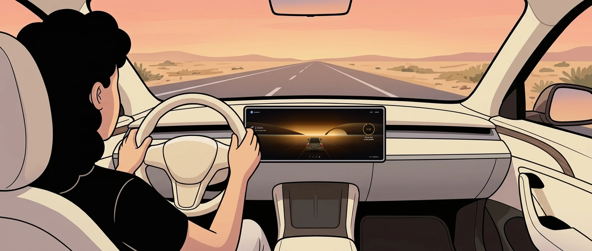
OVERVIEW
Designing the Return
How a self driving car should hand control back to a driver who wasn't watching.
At Level 3 the car drives and the driver can watch a film. When it needs her back, today's cars give her one alarm, and research gives her four to ten secondsGold et al., 2013. This project designs the minute before it.
01 · THE SPARK
When I'm deep in a film, I don't hear my mom.
I grew up loving cars. So when my exchange at ESAD Orléans let me pick a personal project, with engineers at Valeo and Renault as mentors, I chose this one.
Demo videos show a calm, ready driver taking over. But when I'm into a film, my mom can talk right next to me and I won't hear her.
If a car pulled me out of that and gave me ten seconds, I'd panic.
so I looked at how it works today
02 · THE GAP
The car drives. You're allowed to look away.
Mercedes even unlocks films on the centre screen. When the car needs her back, the first thing it says is the alarm.
How it works today.
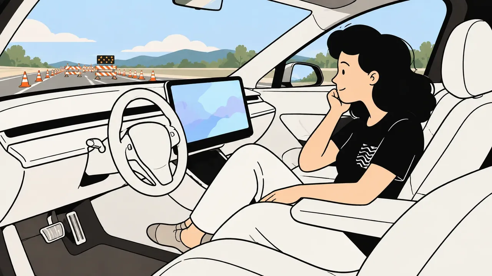
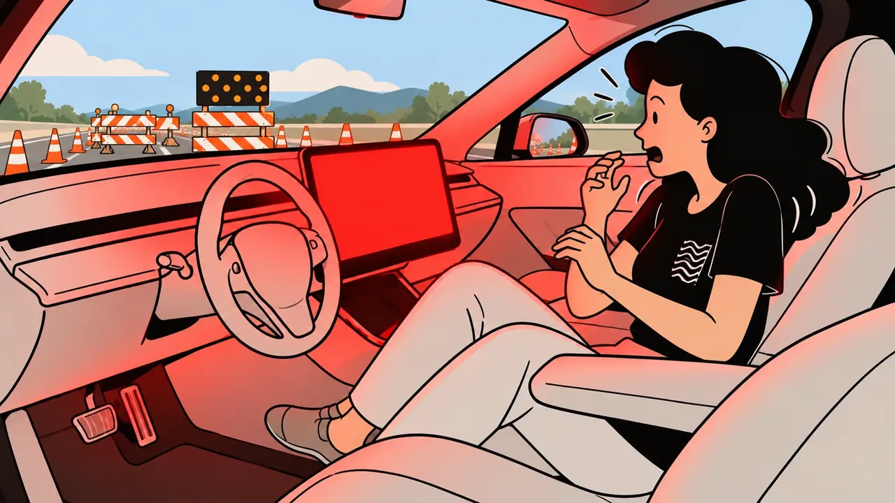
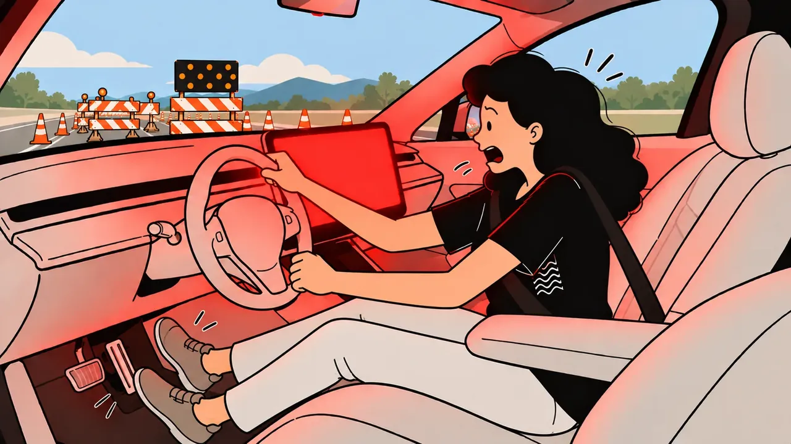
Illustrations generated with ChatGPT, then edited by me.
The alarm isn't the problem. The silence before it is.
03 · MEET THE DRIVER
She isn't careless. The system is working as designed.
Reclined, feet off the pedals, lost in the screen. Each of these has a measurable cost at takeover.
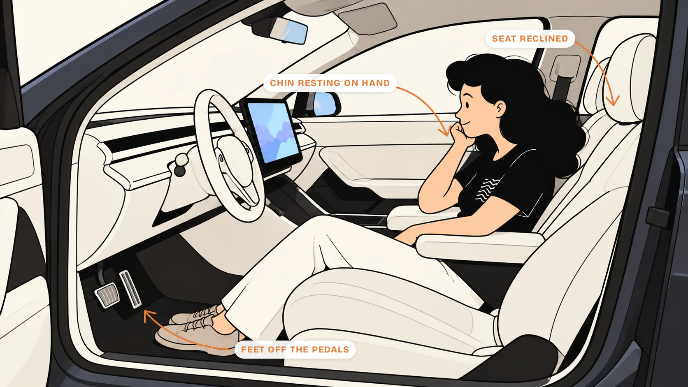
Today the alert is the same at minute two or minute forty. The research says those are very different drivers to bring back.
04 · HOW I RESEARCHED IT
I didn't have a car or a simulator. So I read everything.
STEP 1
Reading 37 papers and sources
Human factors, HCI and psychology, sorted by what each said about the driver.
STEP 2
Taking apart four systems
What does each one tell the driver before a handover, and during it?
While I was working on this, BMW announced it was stepping back from Level 3 for its next lineup. The problem stays for every Level 3 car already on the road.
STEP 3
Checking it with people who build cars
My mentors kept pulling me back to what a car can actually do. One question changed the design. Would a driver really trust a car that keeps telling her it's "less sure"? That is why I dropped the permanent confidence dashboard.
Here's what surprised me
- 6% of the time on the road, with a film on the screen.So her eyes need a reason to look up.van der Heiden et al., 2017
- 27s is how long distraction lingers after the task ends.So her mind needs more than ten seconds.Strayer et al., 2015
- Feet off the pedals slowed braking the most.So her body needs time too.Zhao et al., 2024
- Longer in autonomy meant a worse takeover.So minute forty is harder than minute two.Heliyon, 2024
The finding that changed the project
Share of time drivers looked at the road in the 20 seconds before a handover, while busy with a screen task. Simulator study, 24 driversvan der Heiden et al., CHI 2017
I expected the answer to be a stronger alarm. The research kept pointing earlier.
05 · MAKING SENSE OF IT
Not a broken component. A broken assumption.
Every finding on its own note, moved around until three clusters kept coming back.
GAP 01
The silent system
The alarm is the first thing the car says.
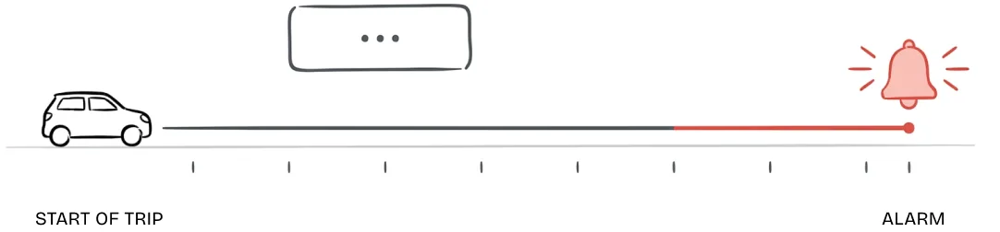
GAP 02
No vocabulary for "less sure"
Cars can say danger. None of the four I reviewed can say "70% sure, not 95%".
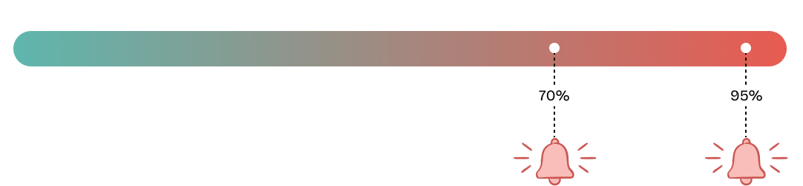
GAP 03
The undesigned sixty seconds
She could recover before the alert. Instead it's empty.
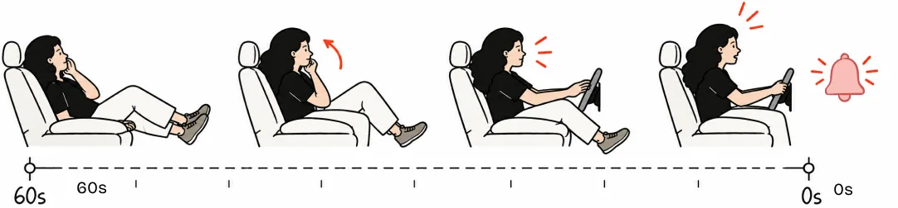
which left one question
06 · THE QUESTION
How do you design sixty seconds?
So the driver arrives ready instead of startled. Why sixty?
07 · FROM INSIGHT TO SYSTEM
What I tried first, and killed
Louder alert
Still one shock, just a bigger one.
Permanent dashboard
A live confidence score competed with the film, and an unsure car makes people anxious.
Five states in sequence
Each state has one job, from an ambient cue to confirming the takeover.
Every idea I killed taught me the same thing. The driver needed time, not volume.
08 · THE FIVE STATES
A sequence, not a switch
The same drive, but now the car starts talking sixty seconds early.
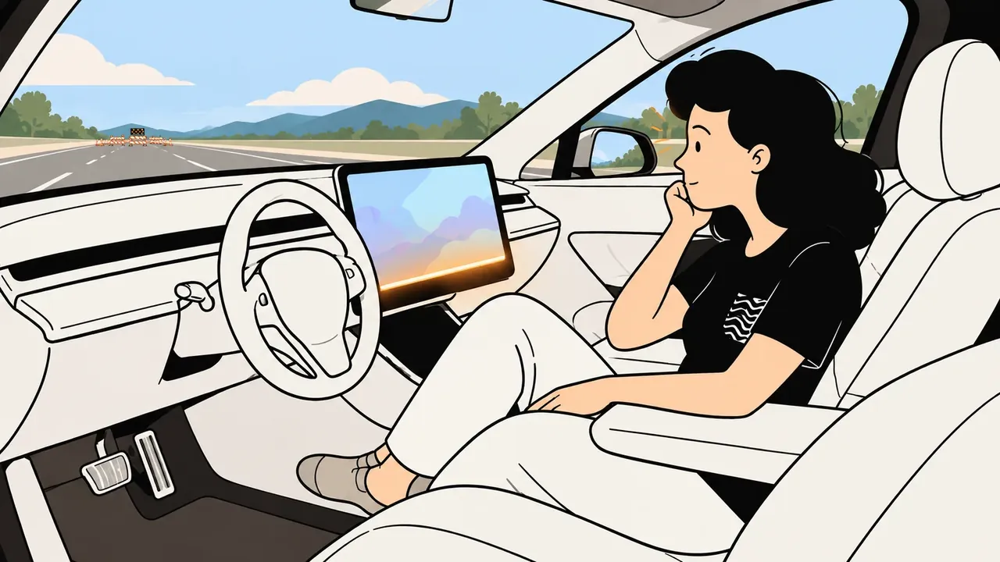
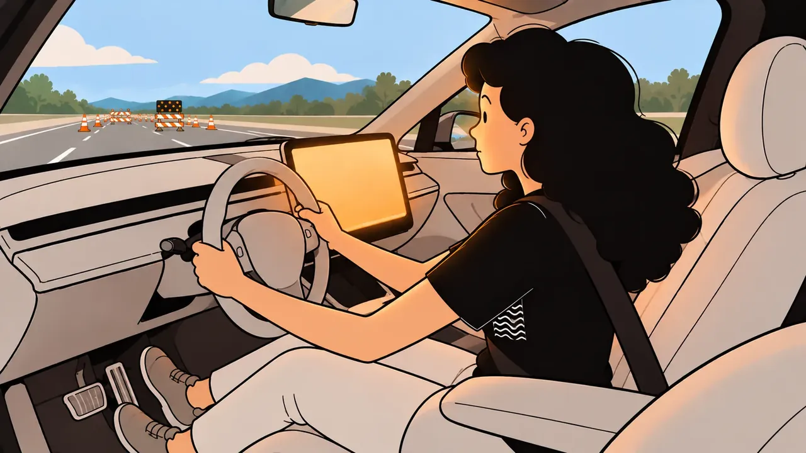
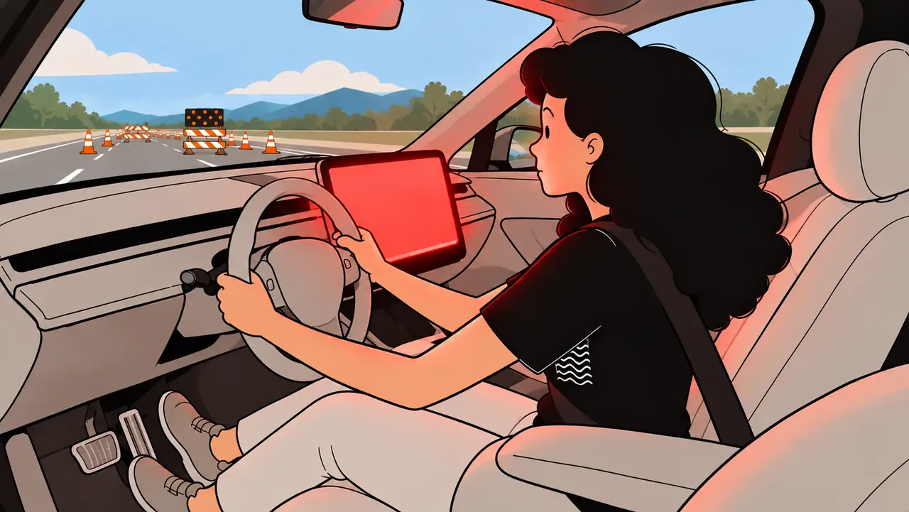
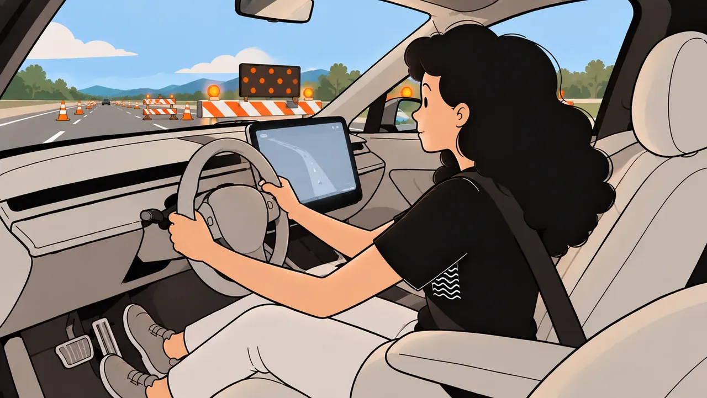
Illustrations generated with ChatGPT, then edited by me.
My first screen 01 was a dashboard. It didn't show how lost she is in the film, so I made it the film. Each screen below answers one of the findings. Keep scrolling.
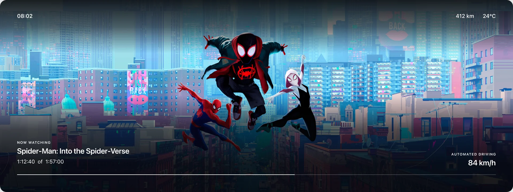
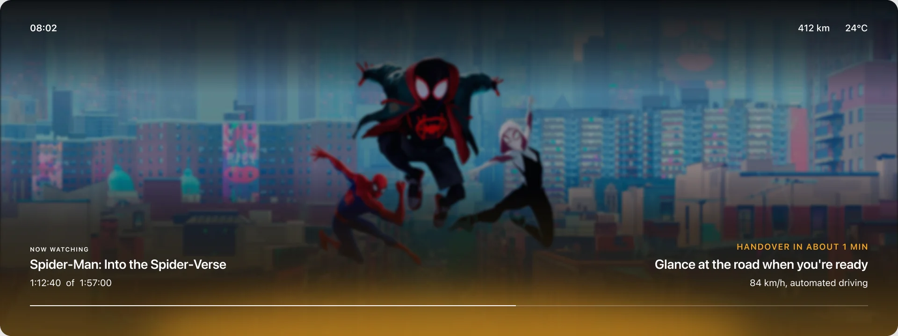
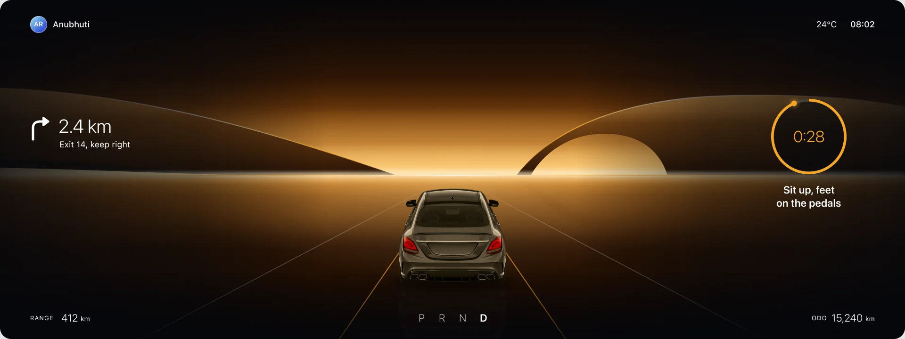
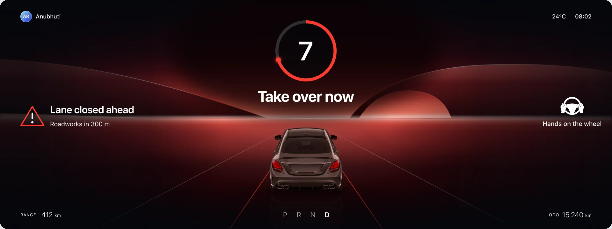
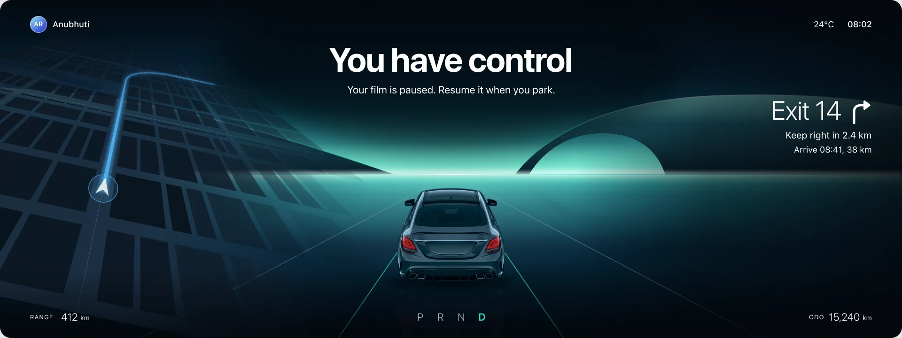
T-∞ to T-60s
01Autonomous Mode
The film, full screen. The car stays quiet.
T-60s to T-30s
02Awareness Ramp
The film dims, amber rises, one gentle line.
Why: drivers glance at the road only 6% of the time, and a quiet early cue doubled that.
T-30s to T-10s
03Reengagement
The road replaces the film. Sit up, feet on the pedals.
Why: distraction lingers about 27 seconds, and feet off the pedals slow braking the most.
T-10s to T0
04Handover Alert
Red, big and high. The seconds left, and why.
Why: the final alert works best when it is loud, visual and felt at once.
T+0 onward
05Takeover Confirm
Teal. "You have control." The film waits.
Why: a calm confirmation helps her settle once she is driving.
09 · THE DESIGN SYSTEM
Three colours, each with one job
Drivers already know these colours from their dashboards. State 01 has none, because that screen belongs to the film.
You have control
State 05 only
Calm returns once she's driving. Not green, which already means "go".
Start coming back
States 02 and 03
Already means "pay attention". Clearer than yellow in daylight.
Take over now
State 04 only
Saved for the last ten seconds, so it still feels urgent.
Amber is my answer to gap 02. Not a confidence number, just a word between calm and danger.
MOTION
Slow fades, never a flash. The film dims instead of cutting out.
TYPE
One instruction per state, readable at a glance from a reclined seat.
CONTRAST
Every text and colour pair on all five screens meets WCAG AA.
10 · WHY THESE NUMBERS
Sixty seconds is a ceiling, not a rule
The warning depends on why the car is handing back, so the sequence adapts.
Sixty is the most warning a planned exit can give. It still needs testing with real drivers.
11 · WHAT I DIDN'T SOLVE
A clean win would be a lie
MOST EFFECTIVE ≠ MOST LIKED
The faster pre alert worked nearly twice as well, yet half the people preferred the slower one because it let them finish their taskvan der Heiden et al., CHI 2017. My timing has to be tested for both.
STILL A NUDGE WITHOUT CONSENT
Dimming someone's film without asking isn't neutral. Drivers deserve a say in the pacing.
WILL SHE LEARN TO IGNORE IT?
If the amber glow appears on every commute, it could become background noise. That needs testing over weeks, not one session.
READING SOMEONE'S STATE IS NOT SMALL
Sensing her heart rate would make this smarter, but that's biometric data under GDPR.
12 · REFLECTION & NEXT
Where this stands
Built on published research, mostly from simulators. Not yet tested with drivers.
Validate the sixty second window
Test 30, 45, 60 and 90 seconds in a simulator.
Pressure test the color language
Check amber and red in bright daylight.
User test the sequence
Does the ramp feel like a nudge or an interruption?
Working with people who actually build cars taught me that constraints don't make design less creative. They make it matter more.
Key sources (5)
- Gold et al. (2013). Take over! How long does it take to get the driver back into the loop? HFES Annual Meeting.
- van der Heiden, Iqbal & Janssen (2017). Priming drivers before handover in semi-autonomous cars. CHI 2017. doi
- Strayer et al. (2015). Measuring cognitive distraction in the automobile III. AAA Foundation for Traffic Safety.
- Zhao et al. (2024). Effects of non-driving related postures on takeover performance. Accident Analysis and Prevention. doi
- Getting back in the loop: does autonomous driving duration affect takeover performance? (2024). Heliyon. doi
All the references are in the paper →
धन्यवाद…